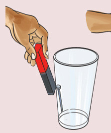

Kazi ya kufanya 5: Kuchunguza jinsi kani ya sumaku inavyopenya kwenye maada
Mahitaji: maji, gilasi mbili, misumari miwili na sumaku mche mstatili
Hatua
1.
Weka msumari kwenye gilasi isiyo na maji. Chunguza Kielelezo namba 7.
2.
Weka maji kwenye gilasi ya pili.
3.
Weka msumari wa pili kwenye gilasi yenye maji.
4.
Tumbukiza ncha ya sumaku mche mstatili polepole ndani ya gilasi yenye maji kukaribia msumari. Je, nini kimetokea?
5.
Pitisha sumaku mche mstatili nje ya gilasi isiyo na maji, karibu na msumari. Je, nini kimetokea?

(a)
(b)
Kielelezo namba 7: Kupenya kwa kani ya sumaku kwenye maada na gilasi